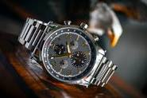
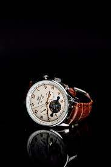

Analog
Traditionally, watches have displayed the time in analog form, with a numbered dial upon which are mounted at least a rotating hour hand and a longer, rotating minute hand. Many watches also incorporate a third hand that shows the current second of the current minute. In quartz watches this second hand typically snaps to the next marker every second. In mechanical watches, the second hand may appear to glide continuously, though in fact it merely moves in smaller steps, typically one-fifth to one-tenth of a second, corresponding to the beat (half period) of the balance wheel. With a duplex escapement, the hand advances every two beats (full period) of the balance wheel, typically 1⁄2-second; this happens every four beats (two periods, 1 second), with a double duplex escapement. A truly gliding second hand is achieved with the tri-synchro regulator of Spring Drive watches. All three hands are normally mechanical, physically rotating on the dial, although a few watches have been produced with "hands" simulated by a liquid-crystal display. Analog display of the time is nearly universal in watches sold as jewelry or collectibles, and in these watches, the range of different styles of hands, numbers, and other aspects of the analog dial is very broad. In watches sold for timekeeping, analog display remains very popular, as many people find it easier to read than digital display; but in timekeeping watches the emphasis is on clarity and accurate reading of the time under all conditions (clearly marked digits, easily visible hands, large watch faces, etc.). They are specifically designed for the left wrist with the stem (the knob used for changing the time) on the right side of the watch; this makes it easy to change the time without removing the watch from the wrist. This is the case if one is right-handed and the watch is worn on the left wrist (as is traditionally done). If one is left-handed and wears the watch on the right wrist, one has to remove the watch from the wrist to reset the time or to wind the watch. Analog watches, as well as clocks, are often marketed showing a display time of approximately 1:50 or 10:10. This creates a visually pleasing smile-like face on the upper half of the watch, in addition to enclosing the manufacturer's name. Digital displays often show a time of 12:08, where the increase in the number of active segments or pixels gives a positive feeling.[59][60]
Digital

A digital display shows the time as a number, e.g., 12:08 instead of a shorthand pointing towards the number 12 and a long hand 8/60 of the way around the dial. The digits are usually shown as a seven-segment display. The first digital mechanical pocket watches appeared in the late 19th century. In the 1920s, the first digital mechanical wristwatches appeared. The first digital electronic watch, a Pulsar LED prototype in 1970, was developed jointly by Hamilton Watch Company and Electro-Data, founded by George H. Thiess.[64] John Bergey, the head of Hamilton's Pulsar division, said that he was inspired to make a digital timepiece by the then-futuristic digital clock that Hamilton themselves made for the 1968 science fiction film 2001: A Space Odyssey. On 4 April 1972, the Pulsar was finally ready, made in an 18-carat gold case and sold for $2,100. It had a red light-emitting diode (LED) display. Digital LED watches were very expensive and out of reach to the common consumer until 1975, when Texas Instruments started to mass-produce LED watches inside a plastic case. These watches, which first retailed for only $20,[65] reduced to $10 in 1976, saw Pulsar lose $6 million and the Pulsar brand sold to Seiko.[66] A Casio DBA-800 databank watch with phone dialling capabilities, c. 1987 An early LED watch that was rather problematic was The Black Watch made and sold by British company Sinclair Radionics in 1975. This was only sold for a few years, as production problems and returned (faulty) product forced the company to cease production. Most watches with LED displays required that the user press a button to see the time displayed for a few seconds because LEDs used so much power that they could not be kept operating continuously. Usually, the LED display color would be red. Watches with LED displays were popular for a few years, but soon the LED displays were superseded by liquid crystal displays (LCDs), which used less battery power and were much more convenient in use, with the display always visible and eliminating the need to push a button before seeing the time. Only in darkness would a button needed to be pressed to illuminate the display with a tiny light bulb, later illuminating LEDs and electroluminescent backlights.[67]
Field
The field watch was designed to be a very accurate timepiece that could be used to The first digital mechanical pocket watches appeared in the late 19th century. In the 1920s, the first digital mechanical wristwatches appeared. The first digital electronic watch, a Pulsar LED prototype in 1970, was developed jointly by Hamilton Watch Company and Electro-Data, founded by George H. Thiess.[64] John Bergey, the head of Hamilton's Pulsar division, said that he was inspired to make a digital timepiece by the then-futuristic digital clock that Hamilton themselves made for the 1968 science fiction film 2001: A Space Odyssey. On 4 April 1972, the Pulsar was finally ready, made in an 18-carat gold case and sold for $2,100. It had a red light-emitting diode (LED) display. help soldiers to synchronise their movements. This would eliminate some danger and unpredictability from an attack.A field watch is a simple military watch, originally called “trench watches” they were initially designed for soldiers to wear in WWI. The first watches designed and manufactured on a broader level were field watches.
Chronograph
A chronograph is a specific type of watch that is used as a stopwatch combined with a display watch. A basic chronograph has an independent sweep second hand and a minute sub-dial; it can be started, stopped, and returned to zero by successive pressure on the stem. More complex chronographs use additional complications and can have multiple sub-dials to measure seconds, minutes, hours and even fractions of a second. In addition, many modern chronographs use moveable bezels as tachymeters for rapid calculations of speed or distance. Louis Moinet invented the chronograph in 1816 for use in tracking astronomical objects.[1][2] Chronographs were also used heavily in artillery fire in the mid to late 1800s. More modern uses of chronographs involve aircraft piloting, auto racing, diving and submarine maneuvering.History The term chronograph comes from the Greek χρονογράφος (khronográphos 'time recording'), from χρόνος (khrónos 'time') and γράφω (gráphō 'to write'). Early versions of the chronograph are the only ones that actually used any "writing": marking the dial with a small pen attached to the index so that the length of the pen mark would indicate how much time had elapsed.[3][4][5][6] The first modern chronograph was invented by Louis Moinet in 1816,[7] solely for working with astronomical equipment. It was Nicolas Mathieu Rieussec who developed the first marketed chronograph at the behest of King Louis XVIII in 1821. The King greatly enjoyed watching horse races, but wanted to know exactly how long each race lasted, so Rieussec was commissioned to invent a contraption that would do the job: as a result he developed the first ever commercialized chronograph. Rieussec was considered the inventor of the chronograph until the Louis Moinet pocket chronograph discovery in 2013 when history was rewritten.
Automatic

John Harwood invented the first successful self-winding system in 1923. LED watches were very expensive and out of reach to the common consumer until 1975, when Texas Instruments started to mass-produce LED watches inside a plastic case. These watches, which first retailed for only $20,[65] reduced to $10 in 1976, saw Pulsar lose $6 million and the Pulsar brand sold to Seiko.[66] A Casio DBA-800 databank watch with phone dialling capabilities, c. 1987In anticipation of Harwood's patent for self-winding mechanisms expiration in 1930, Glycine founder Eugène Meylan started development on a self-winding system as a separate module that could be used with almost any 8.75 ligne (19.74 millimeter) watch movement. Glycine incorporated this module into its watches in October 1930 and began mass-producing automatic watches.[36]